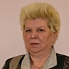

Дошкольное отделение гимназии № 2072
В 2015 году 45% первоклассников Гимназии № 2072 пришли из дошкольного отделения.
- Утренняя улица, 1
- Утренняя улица, 5
- Утренняя улица, 16А
- Перовская улица, 66Г
Воспитатели
Воспитатели, которых чаще всего благодарят родители (отзывы и профили сотрудников взяты с официального сайта школы):|

Воспитатель
Шаповалова Людмила Александровна
5 благодарностей |
Воспитатель
Дроздова Ирина Валерьевна
4 благодарности |
Воспитатель
Левицкая Анастасия Сергеевна
2 благодарности |
 Физ. рук.
Плитина Татьяна Владимировна
Физ. рук.
Плитина Татьяна Владимировна
2 благодарности |
|
Психолог
Колоненкова Оксана Валерьевна
2 благодарности |
Воспитатель
Чеботарева Анна Витальевна
2 благодарности |
Воспитатель
Минакова Елена Константиновна
2 благодарности |
Воспитатель
Забалуева Оксана Евгеньевна
1 благодарность |
|
Воспитатель
Астаркина Оксана Алексеевна
1 благодарность |
Воспитатель
Татаркова Валентина Вячеславовна
1 благодарность |
Муз. рук.
Заварян Гоар Давидовна
1 благодарность |
Воспитатель
Шабурко Ольга Александровна
1 благодарность |
Отзывы
Данные собраны c официального сайта школы и через форму для отзывов.
Добрый день! Хотелось бы выразить огромную благодарность всем сотрудникам дошкольных отделений за Ваш труд и вклад в развитие наших детей!
Отдельное СПАСИБО за еще один плодотворный год передать воспитателям группы №7 ДО-1 Степановой Светлане Вячеславовне и Лебедевой Надежде Александровне, а так же их помощнице Любовь Сергеевне! Ваш каждодневный труд не легок но благороден! Будем расти и работать дальше!!!
Так же хотела бы отметить воспитателей Группы кратковременного пребывания в ДО-3 – Маскакову Юлию Николаевну и Татаркову Валентину Вячеславовну и их помощницу Кристину Андреевну. Это весьма не просто работать с совсем маленькими детьми, которые себя без мамы мало представляют. СПАСИБО Вам за ваши старания и чуткое отношение к каждому ребенку!
И последним Спасибо хочется отметить музыкального руководителя ДО-1 Дедович Ларису Ивановну. На прошлой неделе прошли отчетные спектакли под ее руководством (Театральная студия Триумф). Было очень интересно и приятно посетить эти постановки с участием детей из разных групп. По блеску в их глазах и радостным лицам родителей сразу было понятно, что каждый спектакль удался! Только очень хотелось бы таких постановок побольше!
Отдельное СПАСИБО за еще один плодотворный год передать воспитателям группы №7 ДО-1 Степановой Светлане Вячеславовне и Лебедевой Надежде Александровне, а так же их помощнице Любовь Сергеевне! Ваш каждодневный труд не легок но благороден! Будем расти и работать дальше!!!
Так же хотела бы отметить воспитателей Группы кратковременного пребывания в ДО-3 – Маскакову Юлию Николаевну и Татаркову Валентину Вячеславовну и их помощницу Кристину Андреевну. Это весьма не просто работать с совсем маленькими детьми, которые себя без мамы мало представляют. СПАСИБО Вам за ваши старания и чуткое отношение к каждому ребенку!
И последним Спасибо хочется отметить музыкального руководителя ДО-1 Дедович Ларису Ивановну. На прошлой неделе прошли отчетные спектакли под ее руководством (Театральная студия Триумф). Было очень интересно и приятно посетить эти постановки с участием детей из разных групп. По блеску в их глазах и радостным лицам родителей сразу было понятно, что каждый спектакль удался! Только очень хотелось бы таких постановок побольше!
ЗАМЕЧАТЕЛЬНЫЕ ВОСПИТАТЕЛИ МАРИНА АНАТОЛЬЕВНА И ИРИНА ВАЛЕРЬЕВНА В НАШЕЙ ГРУППЕ №6 ДО 3 ГБОУ ГИМНАЗИИ 2072. СПАСИБО ЗА ЗАБОТУ И ВНИМАНИЕ ПО ОТНОШЕНИЮ К НАШИМ ДЕТЯМ!
Выражаю слова искренней благодарности Забалуевой Оксане Евгеньевне , воспитателю ДО 3 , группы 4, за подготовку к конкурсу "Ступень к успеху" и празднику посвященному 8 марта!
Спасибо умному, терпеливому педагогу , имеющему большой педагогический опыт, которая на протяжении двух лет учит наших детей , вкладывая милосердие, дружбу, согревает теплом своего сердца.
Нашим детям очень повезло с воспитателем!!
Спасибо умному, терпеливому педагогу , имеющему большой педагогический опыт, которая на протяжении двух лет учит наших детей , вкладывая милосердие, дружбу, согревает теплом своего сердца.
Нашим детям очень повезло с воспитателем!!
Добрый день! Хочу выразить благодарность и большое уважение нашим воспитателям в ДО 4 гимназии 2072! А именно Шаповаловой Людмиле Александровне и Беляевой Марие Васильевне! Прекрасное, внимательное отношение к деткам! Замечательно организовывают праздники, на Новый год было весёлое представление на тему цирка, дети остались очень довольны, и на 23 февраля, и на 8 марта (танец пап и дочек заставил прослезиться). Да и в целом детский сад чистый, уютный, большие и яркие площадки для прогулок, на территории тоже чисто. В саду постоянно проходят конкурсы и выставки на разные темы, на первом этаже выставлены поделки родителей с детьми и педагогов, мы с дочкой всегда по-долгу их рассматриваем. Кормят отлично, много и вкусно, детки сытые и довольные! Отличный сад и прекрасные педагоги, всем рекомендую!
Д/О 4 гимназии 2072, группа 7, выражаю огромную благодарность нашей воспитательнице Анне Витальевне, музыкальному работнику и Деду Морозу!!!
Хочу отметить их высокий профессионализм, чуткое отношение к детям, заботу, внимание, индивидуальный подход к каждому ребенку. Отдельно хочется отметить проведённый 24.12.2015г. праздник в честь Нового 2016 года. Благодаря усилиям замечательной нашей воспитательницы Анны Витальевны и музыкального работника (увы, не знаю как её зовут) и прекрасного Деда Мороза!!!, ребёнок получил много положительных эмоций и впечатлений и на долго запомнит такой великолепный праздник!!!
Хочу отметить их высокий профессионализм, чуткое отношение к детям, заботу, внимание, индивидуальный подход к каждому ребенку. Отдельно хочется отметить проведённый 24.12.2015г. праздник в честь Нового 2016 года. Благодаря усилиям замечательной нашей воспитательницы Анны Витальевны и музыкального работника (увы, не знаю как её зовут) и прекрасного Деда Мороза!!!, ребёнок получил много положительных эмоций и впечатлений и на долго запомнит такой великолепный праздник!!!
Добрый день! В группе моего младшего сына (ДО-2, гр. №4) 23 декабря прошел новогодний утренник. Наши детки еще такие маленькие, но как же замечательно они выступали. В этом несомненная заслуга и нашего музыкального руководителя Татьяны Владимировны, и наших воспитателей Надежды Николаевны и Татьяны Ивановны, которые вместе с нашими детьми подготовили этот праздник. Спасибо вам большое!
Добрвый день. Хотелось бы выразить благодарность воспитателям групп 6 и 9 Анастасии Сергеевне, Елене Константиновне, Марине Анатльевне и Марине Станиславовне, нянечкам, музыкальному руководителю, поварам и остальному коллективу дошкольного отделения №3! Детям очень нравится, в группе хорошие отношения, вечером торопишься с работы, хочешь забрать поскорей, а они не хотят уходить. Всегда сыты, а иногда даже покушаются на порцию соседа. С удовольствием ходят на музыкальные уроки Гуарды Давидовны, занимаются творчеством в группе, а вечерами делятся своими успехами.
Спасибо вам большое!!
Спасибо вам большое!!
Здравствуйте Лариса Николаевна! Я хочу выразить отдельную благодарность психологу нашего садика ДО№3 Колоненковой О.В. Работа психолога мало видна родителям - сами мы специалистов посещаем редко, а работу с нашими детьми они ведут во время их пребывания в детском саду. Но когда моя дочь начинает разговор со слов - а сегодня мы были у психолога - значит сейчас я точно услышу рассказ о том что-же интересного Дарья сегодня узнала. Оксана Валерьевна в рамках работы по оценке знаний детей об окружающем мире, социальных отношений и т.п. не только тестирует детей, но и проводит с ними полноценное занятие, не только выявляет отсутствие или наличие знаний и навыков, но и обучает детей. Сразу виден специалист который не "отбывает" рабочее время в саду, а живет жизнью детей и их эмоциями! Спасибо Вам большое Оксана Валерьевна!
Хотелось выразить благодарность всему коллективу ДО №3. Нашему руководителю Мищенко Марии Валерьевне, за плодотворную работу, за комфортную, теплую обстановку в ДО. За качественный подбор воспитательского состава. Нашего музыкального руководителя Заварян Г.Д.. Я очень рада что мой ребенок попала именно в это учреждение. Ну а теперь с огромным удовольствием ,хочу сказать большое спасибо ,нашей любимой группе, в особенности воспитателям Марии Васильевне и Людмиле Александровне, а так же помощнику воспитателя Волокитиной В.Г. За их труд. за индивидуальный подход к каждому ребенку, теплоту и понимание. За то время ,что посещает мой ребенок эту группу, она выросла в моих глазах. Теперь я понимаю ее ,что она говорит, что она умеет творить, мечтать, выражать, а самое главное рассказывать стихи ( они даются нам с трудом) .Это успехи. Спасибо Вам за понимание. .За комфортную обстановку в нашей группе!!!!!! МЫ ВАС ЛЮБИМ!!!!
Добрый день! Хочу выразить благодарность воспитателям группы №10 Ирине Валерьевне, Ольге Александровне и Татьяне Александровне. Как каждый родитель, я очень переживала о том, как моя дочка будет ходить в детский сад. Благодаря прекрасным воспитателям в нашей группе мы ходим в сад с удовольствием, ребенок недавно просил забирать ее из сада попозже, так как там весело и интересно. Воспитатели всегда готовы ответить на интересующие вопросы, помочь советом. Большое спасибо!
Здравствуйте! Хочу выразить благодарность музыкальному работнику дошкольного отделения №3
Гоар Давидовне Заварян! Получили огромное удовольствие от мюзикла "Дюймовочка" , пересматриваем его в ютуб со всеми родственниками по очереди!
Спасибо за Вашу работу!
Также хочу сказать спасибо нашему педагогу (гр.8) Астаркиной Оксане Алексеевне за отличную подготовку детей к школе и неустанную заботу о них.
Гоар Давидовне Заварян! Получили огромное удовольствие от мюзикла "Дюймовочка" , пересматриваем его в ютуб со всеми родственниками по очереди!
Спасибо за Вашу работу!
Также хочу сказать спасибо нашему педагогу (гр.8) Астаркиной Оксане Алексеевне за отличную подготовку детей к школе и неустанную заботу о них.
Если вы нашли ошибку или неточность, пожалуйста, сообщите нам об этом.
Ученик, выпускник или родитель? Оставьте отзыв о детском саде.